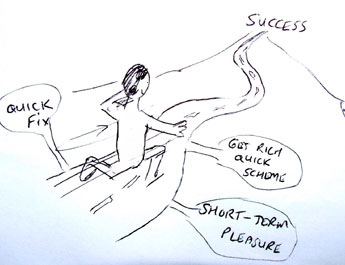

Delayed Gratification
3 reasons why delayed gratification rocks!

Delayed gratification is the highway to real success....
Most of us are suckers in the West -- we want everything now!
Suck, suck, slurp, slurp, gimmee gimmee! I want it now!!!!!
What the hell have we become?
...Junkies looking for the next hit of food, drink, drugs, sex, product,
entertainment.
There is a difference between living in the moment and living
for the moment.
Brian Tracy, in 'Getting Rich Your Own
Way', reveals what economists believe is one on the main reasons why
people retire poor: the inability to delay gratification. By spending all you've got, and more on credit, you never
build up a pile of moola.
W. Clement Stone said, "If you cannot save money, the seeds of greatness are not
in you."
Maybe you don't want to be rich. But do you want to be poor?
Mastery involves wise management of what you do have.
If you are going to be in the desert for 10 days and you only have enough water for 5
days ... you need to manage that water so it lasts and enables you to survive.
Another way of looking at it is that you need to develop a
time perspective. I've had
difficulty with this one in my own life. I never thought about being 30 or 40 back when I was 18. It just
seemed so remote. I figured that the Universe would sort out the details and I would be a success
somehow.
Oops.
You live in the eternal present. But the future is just queueing up ready to slot
into place. If you are 18, you will soon find yourself as a 38 year old with a partner and kids and all of the
needs and requirements of that. If you are 40, so sorry, but you will be hitting 65 before you know it, and oh my
gosh, I bet you wish you had contributed more to your pension plan now, huh? If you are a Mickey D's junkie at 21,
better watch out because you'll be a bloated 41 year old on heart medication in no time at all, reaping the harvest
of all that fat and junk.
Here are 3 reasons why delayed gratification rocks:
1. Delayed gratification builds personal power.
If you staunch the impulse, you are exhibiting control. Just as if you channel a
river into a narrow conduit, the force of the water builds up and becomes more powerful, so you become more
powerful from controlling your urges, appetites and unconscious drives.
2. Delayed gratification multiplies power.
Whether it's energy, desire or money, if you let it accumulate, the sense of increase
makes your life richer and more fulfilling. If you put a portion (yeah, 10%) of your income aside each month into
an interest paying "wealth" account, that you will never touch, you have created a money magnet. The month by month
sense of increase and growing wealth becomes magnetic to more. If you channel your sexual energy into productivity
or into chi kung practices, you become more and more charismatic, sexually magnetic and with very high energy. Chi
kung practitioners build sexual energy and transmute it within their bodies into spiritual energy. It's very
powerful, like a kind of bio-alchemy (yeah, I know, I'm stretching there ... just picture The Matrix... special
effects... and all that woo-woo energy swirling around -- all good stuff!).
3. Delayed gratification carves character into your soul.
There is something tremendous about a man or woman who has achieved a certain rank in
life through long hard work and discipline. They experience a deep sense of power, mastery, and personal
fulfillment that the lottery winner millionaires or reality show instant fame contestants will never appreciate. We
look for the short cuts all the time in our fast paced society but sometimes the long way is a better
route.
Delayed gratification means foregoing something now for something even better later.
It's a mark of maturity, adulthood and mastery. The successful people of the world are savvy in that they take the
long view and build towards that future, sacrificing in small ways now so that they can enjoy greater rewards in
the future. While it can seem that delayed gratification means that you will be 'missing out' in the present, there
are intangible rewards that you will just have to experience for yourself. And the snowball effect (compounding
interest -- it works in all things not just money) means that your momentum will quickly take you into realms of
achievement that you cannot dream of while you still squander all you've got.
(This DELAYED GRATIFICATION article first appeared on my blog 1.0.
This has now been replaced by blog 2.0. What ARE you missing out
on?)
Recommended Book:
Wily Walnut: "Discover How To Banish The
Inner Moron, Shake Off the Dust Of Mediocrity and Discover the Genius You Were Born To
Be!"
GENIUS ARTICLES HOME IQ TESTS - CREATIVITY - GENIUS - BRAIN STORMING - SELF-HELP - BRAINTEASERS - BLOG
|